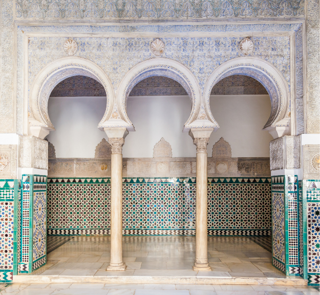
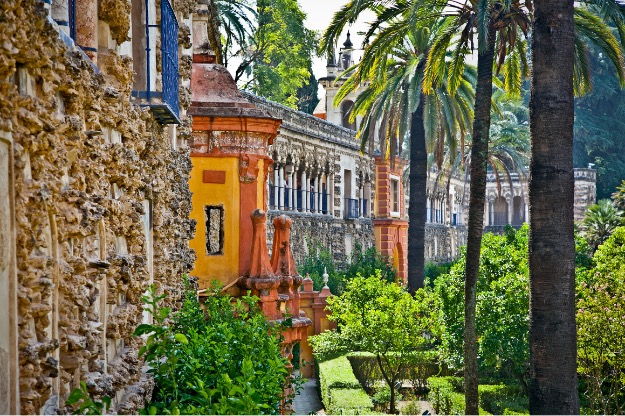

The Alcázar in Seville is a royal palace and UNESCO World Heritage Site, and the oldest royal residence still in use in Europe. The Reales Alcázares feels like stepping straight into a fairy tale — so full of legends, palaces and historical drama that it's hard to imagine it all actually happened here, behind these walls, in this city that has become my home.
Seville's oldest foundation
What fascinates me most about the Alcázar isn't what you see — though what you see is overwhelmingly beautiful. It's what you don't see: everything that lies beneath. The history of this place stretches back further than most people realise. The Phoenicians were here. The Romans were here. The Visigoths built further. And the Moorish rulers eventually created something so extraordinarily beautiful that the Christian kings, when they took Seville in 1248, simply couldn't bring themselves to tear it down.
The Alcázar isn't just one building — it's layer upon layer of civilisations, stacked on top of each other across two thousand years. It's the very foundation of Seville's past. And that's exactly what makes it so indescribably rich to explore.
«Every room in the Alcázar is a story. Every tile pattern is a poem. Every garden corner hides a secret. You need a whole morning — and even then it's not enough.»

Intrigue, mistresses and Arabic poetry
The history of the Alcázar is full of what makes history human — not just wars and dates, but love, jealousy, betrayal and power. King Pedro I of Castile — known as Pedro the Cruel to his enemies and Pedro the Just to his friends — built the most beautiful part of the palace in the 1300s. He brought in Moorish craftsmen from Granada and commissioned a style we call Mudéjar: a unique blend of Islamic and Christian architecture found in its most beautiful form right here.
Pedro's fascination with Moorish culture ran far deeper than the architecture. He surrounded himself with Arabic-speaking advisors, had diplomatic ties with the Sultan of Granada — and the walls of his palace are covered in Arabic calligraphy and poetry, carved into plaster and ceramic with a precision that takes my breath away every single time I see it.
And then there are the stories behind the walls — the intrigue between royal brothers, the power struggles, the secret passages. The Alcázar isn't a museum telling you about the past. It is the past, and it lives in every single room.
Walking room to room — and being utterly dazzled
I remember very clearly exploring the Alcázar to get to know it as a guide. I walked from room to room and was simply dazzled. Not just by the scale or the opulence — but by the details. The fantastic tiles — the azulejos — covering the lower walls of so many rooms. Every pattern geometrically precise, every colour choice deliberate. And then the Arabic script running along the walls like an endless song — verses from the Quran, tributes to the king, wishes of blessing — all carved into plaster by craftsmen seven hundred years ago.
«I walked from room to room and was dazzled. Not by gold or riches — but by the quiet perfection of every single tile pattern, every single Arabic verse on the wall.»
The gardens — an oasis worth a whole morning
If the palace is the fairy tale, the gardens are the dream inside the fairy tale. They stretch across an enormous area behind the palace buildings — with fountains, canals, citrus trees, myrtles and roses creating an atmosphere so relaxing it feels almost magical on a warm summer day.
This is where you'll find two of my absolute favourite details in the whole Alcázar. First, the beautiful peacocks roaming freely through the gardens — as though they've always belonged here, and perhaps they have. Second: the water-powered organ. There are very few of these in Europe, and the Alcázar has one — an instrument driven by water power that plays itself, a technological curiosity from hundreds of years ago that still works and still surprises visitors.
A living royal residence
A detail that surprises many: the Alcázar is still officially used by the Spanish royal family. When the king and queen visit Seville, they stay here. That makes the Alcázar the oldest royal residence still in active use in Europe. It's not a museum behind glass — it's a living place with more than two thousand years of unbroken history.

- Full name: Reales Alcázares de Sevilla — UNESCO World Heritage Site
- Oldest royal residence in active use in Europe
- History stretching back to the Phoenicians and Roman times
- The most beautiful part built by Pedro I in the 1300s, in Mudéjar style
- The gardens have free-roaming peacocks — and a rare water-powered organ
- Allow plenty of time — ideally a whole morning for the palaces and gardens
- A combined ticket with the Cathedral is recommended — book tickets in advance
- Visit early morning or after 2pm to avoid the biggest queues
Frequently asked questions
The Reales Alcázares de Sevilla is a UNESCO-listed royal palace, and the oldest royal residence still in active use in Europe.
Early morning or after 2pm, based on Gunvor's experience as a guide.
Yes, a combined ticket with the Cathedral is recommended, and it's worth booking Alcázar tickets in advance.